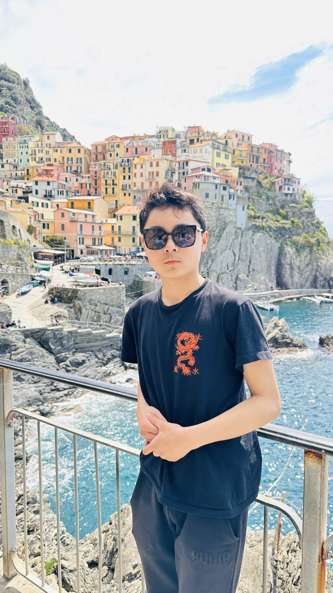

Journal
Andy S. Ding — Environmental engineering
Mapping where the ocean
hides its plastic.
I'm a high-school researcher building Project Kymarion — a low-cost autonomous boat that surveys the Massachusetts coast to find where microplastics collect. Below: the research, the writing, and the data behind it.
ASV autonomous surface vehicle
ISEF 2026–27 target
FTC robotics captain
Profile
About Me

I'm Andy Ding, a 10th grader at Weston High School (Class of 2028) headed for environmental engineering. I build at the intersection of hardware, software, and the environment — and I gravitate to problems that actually matter.
My current research includes Project Kymarion, an ISEF project I'm co-developing with a partner to map nearshore microplastic concentrations using a low-cost autonomous surface vehicle along the Massachusetts coast, and LuminaBone, a medical imaging project developing a shading-based 3D bone endoscope for orthopedic surgery. Beyond research, I captain my FTC robotics team, compete in DECA and debate, swim at the varsity level, and write about my work for public audiences. Co-researcher: Ethan Zhang — view his work ↗
Skills & technologies
Languages
Hardware
Tools
Weston High School, MA — Class of 2028
Research focus: Autonomous systems & microplastic detection
Weston, Massachusetts
Field log
Blog
Field notes — documenting Project Kymarion, ocean research, and whatever I'm learning right now.
💬 Comments are open on every post — I read all of them.
Research
Research
Independent research in environmental engineering, robotics, and ocean science.
Ongoing
2026–27
Project Kymarion
Do microplastics pile up where opposing coastal currents collide? I co-built a low-cost autonomous boat to find out.
- Autonomous surface vehicle
- 15–20 GPS waypoints / run
- Massachusetts coast
- ISEF · co-investigator
Ongoing
Summer 2026
LuminaBone
A 6 mm endoscope that rebuilds 3-D bone surfaces from moving light — no dye, no stereo cameras.
- Near-light photometric stereo
- Target ≥ 15 fps
- Orthopedic & ENT
- Medical imaging internship
📄 Papers in progress
- Nearshore Microplastic Accumulation at Current-Convergence Zones: A Low-Cost ASV Mapping Study
- LuminaBone: Development of a Low-Cost Shading-Based 3D Bone Endoscope Using a Near-Light Photometric Stereo Approach
Credentials
Résumé
⬇ Download PDF
Last updated: June 2026
🎓 Education
Weston High School
2024 – 2028
Weston, MA — Class of 2028
- Rigorous courseload: AP Stats, AP Mod World History, H Pre-Calc, H Bio
- Planned: AP Calc BC, AP CS Principles, AP US History, H Chemistry
- Independent ISEF research in environmental engineering & robotics
💼 Experience
Co-Investigator — Project Kymarion
Summer 2026 – Summer 2027
ISEF Research, Coastal Massachusetts
- Co-designed and built a low-cost ASV for autonomous nearshore microplastic mapping
- Runs 15–20 GPS waypoint surveys per deployment; fieldwork underway in MA coastal waters
- Authoring research paper on convergence-zone microplastic accumulation; targeting ISEF
Medical Robotics Program
Summer 2025
Medical Robotics
- Participated in selective medical robotics program
Water Safety Instructor / WPS Intern
Summer 2024
Weston Public Schools
- Certified Water Safety Instructor; taught youth swim lessons
- Completed paid WPS internship
⭐ Achievements
- Dean's List Semifinalist — FIRST Tech Challenge, 2025
- DECA ICDC Qualifier — International Career Development Conference, 2026
- Top 30 New England 50m Freestyle LCM (13–14 age group) — USA Swimming
- MA State Championship Qualifier — FTC Team 26413
- MA NSDA State Tournament Qualifier — Speech & Debate
🛠 Skills
🌟 Leadership & Activities
Team Captain
2024 – Present
FIRST Tech Challenge — FTC Team 26413
Founder
2025 – Present
GNCE Robotics — Youth Robotics Nonprofit, Massachusetts
Competitive Swimmer
2024 – Present
USA Swimming · MIAA North Sectionals · Varsity Swim Team
DECA Competitor
2024 – Present
Weston High School Chapter — ICDC 2026 Qualifier
Beyond the lab
Interests
The pursuits that keep me curious outside the lab.
Ocean research
Fascinated by the intersection of robotics and environmental science. Project Kymarion is my attempt to give the ocean a voice through data — one autonomous pass at a time.
Competitive swimming
Varsity swimmer and USA Swimming competitor. Top 30 New England 50m Freestyle (13–14 LCM). MIAA North Sectional qualifier.
Robotics
FTC Team 26413 Captain and Dean's List Semifinalist. Led full design–build–program cycle. Also founding GNCE Robotics to expand STEM access for local youth.
Entrepreneurship
DECA ICDC qualifier (2026). Competed in Entrepreneurship: Franchising, scored 96% on live business presentation. Long-term goal: build a company that advances human potential.
Speech & debate
MA NSDA State Tournament qualifier. Competitive debate sharpens the same analytical instincts that drive my research.
Science communication
Writing and publishing about microplastics and robotics for public audiences. Running a blog and podcast to document Project Kymarion and make ocean research accessible.
Philosophy of technology
How do autonomous systems change our relationship with the natural world? The ethical questions behind environmental engineering keep me thinking.
Track & field
Competing in track keeps me grounded. The discipline of training translates directly to long research hours on the water.
Markets lab
AndyStockAnalysis
A personal markets dashboard — live(ish) data, deep technical & fundamental analysis, and plain-English explanations of every number.
⚠️ Educational information only — not financial advice.
Everything here is automated analysis of public data for learning purposes. It is
not a recommendation to buy or sell anything. Indicators and past performance
don't guarantee future results. Do your own research and consult a licensed professional
before investing. Prices are delayed (~15 min).
Click a stock to open its full analysis dashboard. Your watchlist is saved in this browser.
💬 Discussion